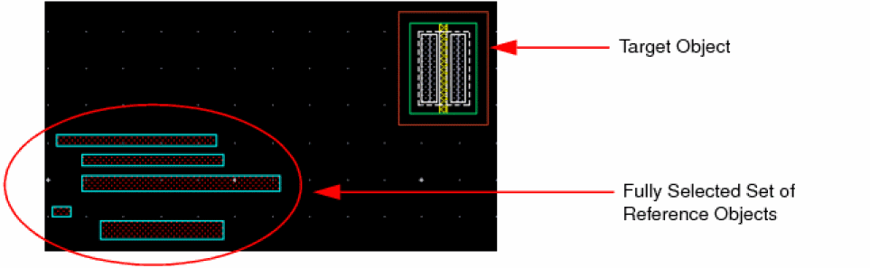
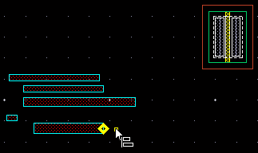
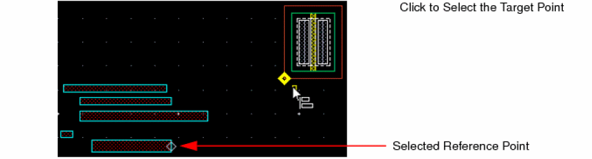
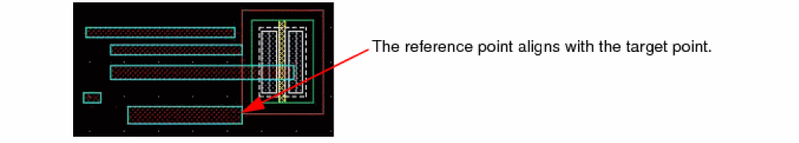
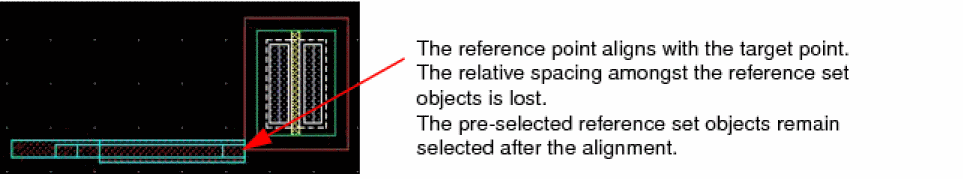
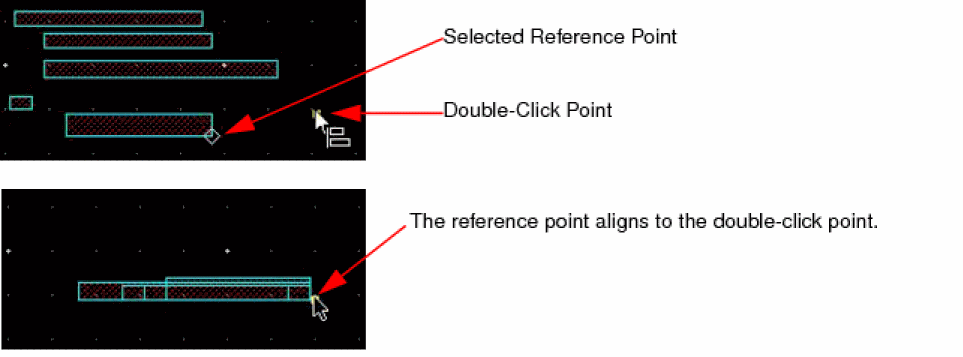
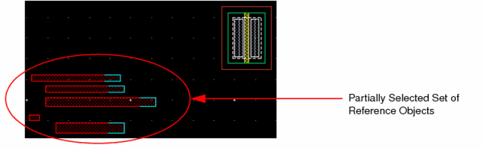
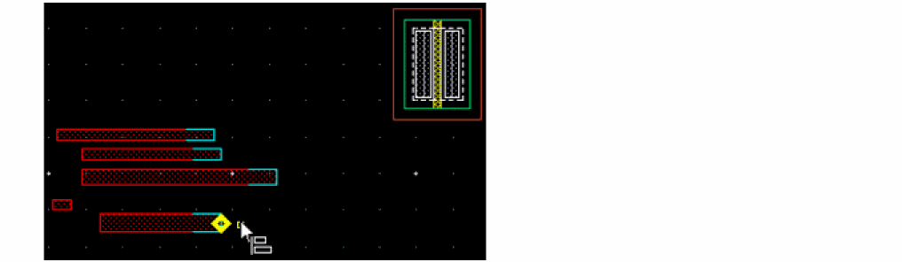
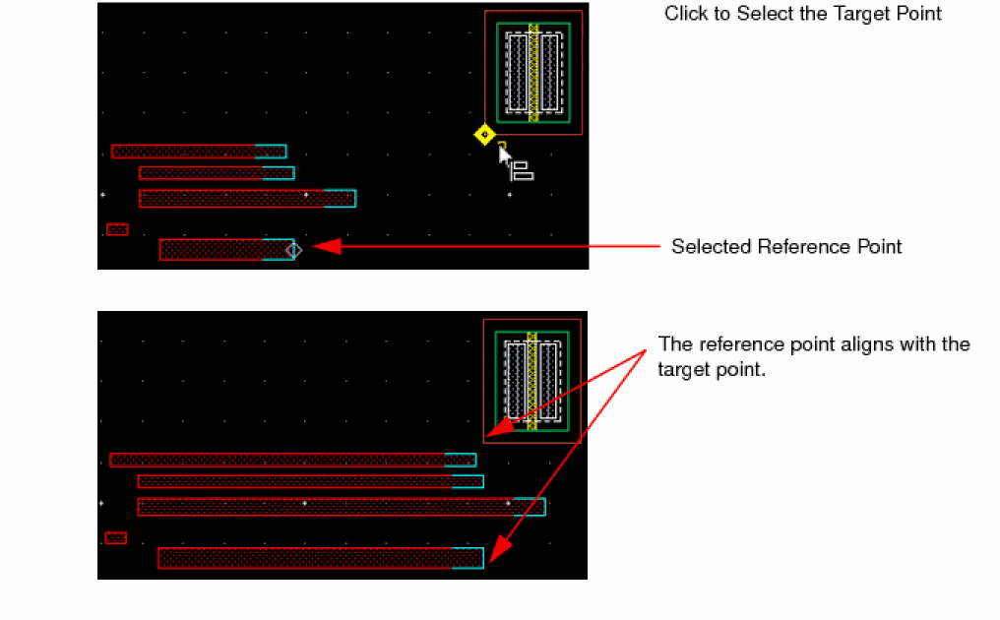
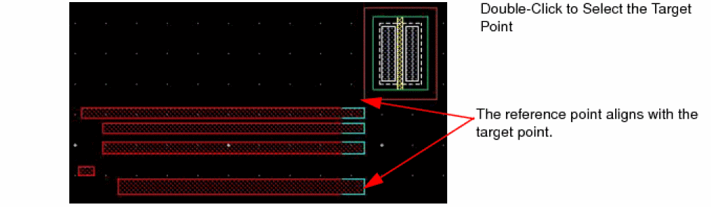

Aligning Points with a Target Point
You can align points to target points, edges, and centerlines. You can align points in full or partial selection mode.
Aligning Points with aTarget Point in Full Selection Mode
Aligning Points with a Target Point in Partial Selection Mode
Aligning Points with aTarget Point in Full Selection Mode
To align points of objects in a reference set with a target point in full selection mode:
-
On the Options toolbar in the layout window, ensure that the Full Select button
is on. If not, press
F4to enable it. -
Select the reference set objects.
 - Choose Edit – Quick Align to start the Quick Align command.
-
Press
F3or right-click and select Options from the Quick Align shortcut menu.
The Quick Align form appears. - Set the options as required.
-
On the canvas, move the pointer around the selected reference set.
The potential points, edges, and centerlines in the objects in the reference set highlight. By default, points, edges, and centerlines highlight. Ensure that the Snap to Edges and Points option is selected in the Quick Align shortcut menu. -
Click to select a reference point.
Notice that the selected reference point is marked by a diamond shape. -
Move the pointer close to the target object.
The potential points and edges in the target object appear. -
Do one of the following to select a highlighted target point:
-
Click the highlighted target point.
The object with the reference point moves to align with the selected target point. All the objects in the reference set move by the same distance. The relative spacing amongst the reference set objects is maintained.The pre-selected reference set objects remain selected after the alignment. -
Double-click the highlighted target point.
The object with the reference point moves to align with the selected target point. All the objects in the reference set move to align with the reference and target point. The relative spacing amongst the reference set objects is lost.
The points on the objects in the reference set that align with the reference and target points are relative to the selected reference point.
You need to double-click at a point when no target point is highlighted.
The object with the reference point moves to align with the point. All the objects in the reference set move to align with the reference and the double-clicked point. The relative spacing amongst the reference set objects is lost.
The points on the objects in the reference set that align with the reference and target points are relative to the selected reference point.
The pre-selected reference set objects remain selected after the alignment. -
Click the highlighted target point.
Aligning Points with a Target Point in Partial Selection Mode
To align points of objects in a reference set with a target point, in partial selection mode:
-
On the Options toolbar in the layout window, ensure that the Partial Select button
is on. If not, press
F4to enable it. -
Partially select the set of reference objects. Use
Shift+ click to add to the selection andCtrl+ click to remove from the selection.
 - Select Edit – Quick Align to start the Quick Align command.
-
Press
F3or right-click on the canvas and select Options from the Quick Align shortcut menu.
The Quick Align form appears. - Set the options as required.
-
On the canvas, move the pointer around the partially selected reference set.
The partially selected objects determine the alignment axis. The potential points, edges, and centerlines in the objects in the reference set along one axis are highlighted. By default, points, edges, and centerlines are highlighted. Ensure that the Snap to Edges and Points option is selected from the Quick Align shortcut menu. -
Click a highlighted point to set it as the reference point.
 -
Move the pointer close to the target object.
The potential points and edges in the target object are highlighted. Notice that the selected reference point is marked by a diamond shape. -
Do one of the following to select a highlighted target point:
-
Click the highlighted target point.
The object with the reference point stretches to align with the selected target point. All the objects in the reference set stretch by the same amount. The relative spacing amongst the reference set objects is maintained.The pre-selected reference set objects remain selected after the alignment. -
Double-click to select the target point.
The object with the reference point stretches to align with the target point. All the objects in the reference set stretch by varying amounts to align with the target point. The relative spacing amongst the reference set objects is not maintained.The pre-selected reference set objects remain selected after the alignment.
-
Click the highlighted target point.
Related Topics
Object Alignment by Using the Quick Align Command
Return to top